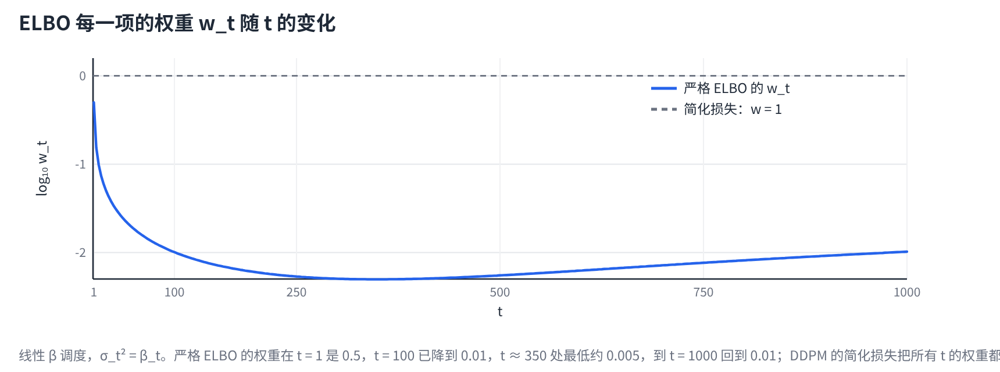
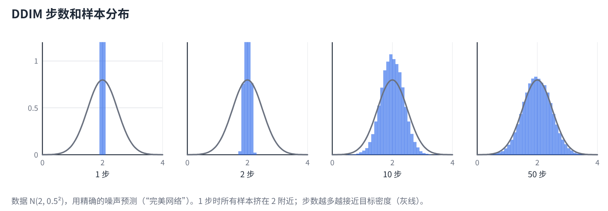
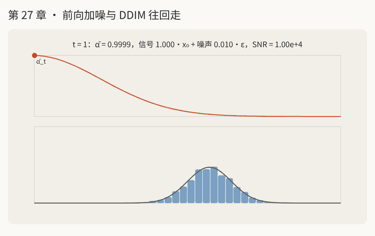

第 27 章 · 扩散模型推导：前向闭式、后验、ELBO 到噪声预测、Tweedie 与 DDIM
本地运行
git clone https://github.com/wikieden/math-and-eval-stats
cd math-and-eval-stats/code/notebooks
pip install jupyterlab torch numpy
jupyter lab ch27_diffusion_derivation.ipynb也可以下载后直接用 VS Code 打开 .ipynb 运行。需要 GPU 的章节在 Colab 里选「代码执行程序 → 更改运行时类型 → GPU」。
本章回答：为什么加 t 步噪声可以一步加完？反向过程的"正确答案" q(x_{t−1} | x_t, x_0) 是什么？ELBO 怎么一路化简成"预测噪声的均方误差"？为什么预测噪声等于估 score？DDIM 为什么能跳步、不加噪声？
讲解日期：2026-11-25 · 上一章：第 26 章 轨迹优化与 MPC · 下一章：第 28 章 Flow matching 推导
对应原文：DDPMtransformer-deep-dive/materials/text/papers/ddpm-2006.11239.txt（前向闭式式 (4) L118、后验式 (6)(7) L132–L135、ε 参数化 L174–L175、式 (12) 与简化损失式 (14) L300–L308）；Luo 2022diffusion-models/materials/text/papers/luo-understanding-diffusion-unified-2208.11970.txt（Tweedie 公式 L1031–L1038）；DDIMdiffusion-models/materials/text/papers/ddim-2010.02502.txt（式 (12) L290、和 Euler 积分的类比 L348）
本章缩写：DDPM = Denoising Diffusion Probabilistic Models（去噪 / 扩散 / 概率模型）；DDIM = Denoising Diffusion Implicit Models（去噪扩散 / 隐式模型）；ELBO = Evidence Lower BOund（证据下界）；SNR = Signal-to-Noise Ratio（信噪比）；β_t = 第 t 步加的噪声方差；α_t = 1 − β_t；ᾱ_t = α₁⋯α_t；β̃_t = 后验方差；ε_θ = 网络预测的噪声；score = ∇ log p（对数密度的梯度）。全部缩写见 附录 · 缩写与术语表
讲解
第一步：前向闭式：t 步噪声一步加完（2026-11-25）
类比：往一杯水里分 t 次滴墨水，和一次滴进"这 t 次加起来那么多"的墨水，结果分布一样。
每步 \(x_t = \sqrt{\alpha_t}x_{t-1} + \sqrt{\beta_t}\epsilon_t\)。两个独立高斯噪声相加还是高斯，方差按系数平方加，展开 t 步得（DDPM 式 (4)，L118）：
例子（线性调度 β 从 10⁻⁴ 到 0.02，T = 1000）：
| t | ᾱ_t | 信号系数 √ᾱ | 噪声系数 √(1 − ᾱ) | SNR = ᾱ/(1 − ᾱ) |
|---|---|---|---|---|
| 1 | 0.9999 | 0.9999 | 0.0100 | 10⁴ |
| 100 | 0.8970 | 0.9471 | 0.3209 | 8.71 |
| 500 | 0.0786 | 0.2803 | 0.9599 | 0.085 |
| 1000 | 0.00004 | 0.0064 | 1.0000 | 4 × 10⁻⁵ |
训练时随机抽一个 t、一步算出 x_t，不用真的走 t 步。
一句话：高斯噪声叠加还是高斯，x_t = √ᾱ_t x₀ + √(1 − ᾱ_t) ε 一步采到任意时刻。
第二步：后验 q(x_{t−1} | x_t, x_0)：知道终点就知道上一步该在哪（2026-11-25）
类比：知道一个人从家（x₀）出发、现在在路口（x_t），就能猜他上一分钟大概在哪。
用贝叶斯公式把三个高斯 \(q(x_t\mid x_{t-1})\)、\(q(x_{t-1}\mid x_0)\)、\(q(x_t\mid x_0)\) 拼起来，配方后还是高斯（DDPM 式 (6)(7)，L132–L135）：
例子：
| t | x₀ 的系数 | x_t 的系数 | β̃_t | β_t |
|---|---|---|---|---|
| 2 | 0.5453 | 0.4547 | 0.000055 | 0.000120 |
| 500 | 0.0031 | 0.9941 | 0.010031 | 0.010040 |
| 1000 | 0.0001 | 0.9899 | 0.020000 | 0.020000 |
t 小时 x₀ 的话语权大（快到终点了）；t 大时几乎只看 x_t。反向模型 \(p_\theta(x_{t-1}\mid x_t)\) 要学的就是这个高斯，难点只在"不知道 x₀"。
一句话：给定 x₀ 时反向一步有闭式，均值是 x₀ 和 x_t 的加权；网络要做的就是替代那个未知的 x₀。
第三步：ELBO 化简成预测噪声（2026-11-25）
ELBO 拆成每一步的 KL：\(\sum_t\text{KL}\big(q(x_{t-1}\mid x_t, x_0)\,\|\,p_\theta(x_{t-1}\mid x_t)\big)\)。两个方差相同的高斯之间的 KL 只剩均值差：\(\|\tilde\mu_t - \mu_\theta\|^2/(2\sigma_t^2)\)。
把 \(x_0 = (x_t - \sqrt{1 - \bar\alpha_t}\,\epsilon)/\sqrt{\bar\alpha_t}\) 代进 μ̃，并让网络用同样的形式输出 μ_θ（只是把 ε 换成 ε_θ），均值差正比于噪声差（DDPM L174–L175、式 (12)）：
例子（σ_t² = β_t）：
| t | 1 | 10 | 100 | 1000 |
|---|---|---|---|---|
| w_t | 0.5001 | 0.0737 | 0.0101 | 0.0102 |
严格的 ELBO 权重主要压在很小的 t 上（几乎没噪声、对生成质量影响小）。DDPM 把 w_t 全换成 1，得到简化损失（式 (14)，L300）：\(\mathbb E_{t, x_0, \epsilon}\|\epsilon - \epsilon_\theta(x_t, t)\|^2\)，样本质量反而更好（L308）。

图 27-1 · 纵轴 w_t（对数）；严格 ELBO 的权重集中在 t 很小的地方（t ≈ 350 处最低约 0.005），简化损失把整条线拉平成 1一句话：ELBO 的每一项是"后验均值和模型均值的差"，ε 参数化后变成加权的噪声 MSE；DDPM 丢掉权重，就是现在人人在用的那个损失。
第四步：Tweedie：预测噪声 = 估 score = 估 x₀（2026-11-25）
Tweedie 公式（Luo 2022 L1031–L1038）：\(x_t = \sqrt{\bar\alpha_t}x_0 + \sqrt{1 - \bar\alpha_t}\epsilon\) 时
和第一步对照，得到三种等价的参数化：
例子（数据 N(2, 0.5²)，这时 p_t、score、E[x₀ | x_t] 都有闭式）：
| t、x_t | 高斯共轭直接算 E[x₀ | x_t] | Tweedie |
|---|---|---|
| 100、1.5 | 1.7148 | 1.7148 |
| 500、0.5 | 1.9955 | 1.9955 |
t = 500 时噪声很大，x_t 几乎没信息，估计贴近数据均值 2。
一句话：预测噪声、预测 score、预测 x₀ 是同一件事的三种写法，Tweedie 公式把它们连起来。
第五步：DDIM：用 x̂₀ 跳步，不加新噪声（2026-11-25）
类比：不是一步一步往回走，而是每次先猜终点在哪，再按"从终点出发到这个时刻"的配方直接跳过去。
DDIM（η = 0，式 (12)，L290）：
确定性（同一个 x_T 永远给出同一个结果），而且 s 可以离 t 很远：它是概率流 ODE 的一种离散（L348，第 32 章第五步）。
例子（数据 N(2, 0.5²)，用精确的 ε 预测，相当于"网络完美"）：
| 步数 | 1 | 2 | 10 | 50 |
|---|---|---|---|---|
| 样本均值 | 2.0000 | 1.9994 | 1.9970 | 1.9962 |
| 样本标准差（目标 0.5） | 0.0016 | 0.0712 | 0.3685 | 0.4695 |
1 步时 x̂₀ = E[x₀ | x_T] 对所有样本都差不多等于 2：只得到"平均图"，多样性塌掉。步数越多越接近目标分布。即使网络完美，步数少也会出错：误差来自积分本身（第 22 章）。

图 27-2 · 1、2、10、50 步 DDIM 的样本直方图和目标 N(2, 0.5²)（灰线）；1 步全挤在均值处场景代码：diffusers 里换成 DDIM、少步采样（真实库调用；本书环境没装 diffusers，没跑过）：
from diffusers import DDIMScheduler
pipe.scheduler = DDIMScheduler.from_config(pipe.scheduler.config)
image = pipe(prompt, num_inference_steps=50, eta=0.0).images[0] # eta=0：确定性 DDIM
一句话：DDIM 每步先估 x̂₀、再按前向闭式跳到更早的时刻，不加噪声；步数少时退化成"平均答案"。
动画演示：前向加噪与 DDIM 往回走

可交互版：animations/27-diffusion-derivation.html（下拉切换"前向 / DDIM"；滑块调 t 或步数）。
怎么看：
- 前向：t 从 0 到 1000，直方图从 N(2, 0.5²) 慢慢变成 N(0, 1)，右上角是 ᾱ_t 和 SNR（第一步）；
- DDIM：滑块是总步数；上方是 12 个样本从噪声走回数据的确定性轨迹，下方是 3000 个样本最后的直方图；步数少时挤成一团（第五步）。
练习与作答记录
题 1（第一步）：两步加噪 β₁ = 0.1、β₂ = 0.2，从 x₀ 到 x₂ 的分布是什么？（写出均值系数和方差）
作答：（待作答）
题 2（第二步）：t = 1 时（ᾱ₀ = 1），后验 q(x₀ | x₁, x₀) 的均值和方差是什么？为什么？
作答：（待作答）
题 3（第四步）：某时刻 ᾱ_t = 0.64，x_t = 1.0，网络输出 ε_θ = 0.5。算 x̂₀ 和 score 的估计。
作答：（待作答）
口诀
噪声叠加还是高斯，一步采到任意 t；
知道 x₀ 后验就有闭式，网络替代那个 x₀；
ELBO 化成加权噪声差，丢掉权重是简化损失；
预测噪声、score、x₀，Tweedie 一线牵；
DDIM 先猜终点再跳步，步太少只剩平均。
本章复习卡片
ST92（前向闭式与后验 q(x_{t−1} | x_t, x_0)）、ST93（ELBO 到简化损失）、ST94（Tweedie：噪声、score、x₀ 三种参数化）、ST95（DDIM 的更新式和步数少时的退化）。练习做完后，按答错、卡住的地方补上。
附录 · 延伸阅读
留给以后深入学习用，不影响本章主线。★ 是建议先读的。
推荐阅读
| 读什么 | 读哪里 | 读它为了什么 |
|---|---|---|
| ★ DDPM（Ho 2020） | §2（式 (1)–(8)）、§3.2（式 (11)–(14)） | 本章推导的原文 |
| ★ Luo 2022 | ELBO 推导、Tweedie 一节（L1031 起） | 三种参数化的统一讲法 |
| ★ 《从零读懂扩散模型》第 3–7 章 | 前向、DDPM 训练与采样、DDIM | 直觉版和代码版 |
| DDIM（Song 2020） | §4.1 式 (12)、§4.3 | 非马尔可夫前向与 ODE 视角 |
| 第 17 章 生成模型的数学 | 第一、二步 | ELBO、KL 的基础 |
数学原理
- 高斯相加：独立的 \(aX + bY\)（X、Y 标准正态）~ N(0, a² + b²)；递推 \(\alpha_t(1 - \bar\alpha_{t-1}) + \beta_t = 1 - \bar\alpha_t\)。
- 高斯后验配方：两个关于 x_{t−1} 的高斯相乘，精度相加 \(1/\tilde\beta_t = \alpha_t/\beta_t + 1/(1 - \bar\alpha_{t-1})\)，均值按精度加权。
- 等方差高斯的 KL：\(\text{KL}(\mathcal N(\mu_1, \sigma^2)\|\mathcal N(\mu_2, \sigma^2)) = \|\mu_1 - \mu_2\|^2/(2\sigma^2)\)。
- Tweedie：对 \(p(x_t) = \int\mathcal N(x_t; ax_0, s^2)p(x_0)dx_0\) 求对数梯度，得 \(s^2\nabla\log p(x_t) = a\,\mathbb E[x_0\mid x_t] - x_t\)。
公式清单
| 公式 | 意思 |
|---|---|
| \(q(x_t\mid x_0) = \mathcal N(\sqrt{\bar\alpha_t}x_0, (1 - \bar\alpha_t)I)\) | 前向闭式 |
| \(\tilde\mu_t\)、\(\tilde\beta_t = \frac{1 - \bar\alpha_{t-1}}{1 - \bar\alpha_t}\beta_t\) | 后验 |
| \(\mathbb E\|\epsilon - \epsilon_\theta(x_t, t)\|^2\) | 简化损失 |
| \(\epsilon_\theta = -\sqrt{1 - \bar\alpha_t}\nabla\log p_t\) | 噪声 ↔ score |
| \(x_s = \sqrt{\bar\alpha_s}\hat x_0 + \sqrt{1 - \bar\alpha_s}\epsilon_\theta\) | DDIM |
代码对照：把本章的数字用代码算一遍
代码在仓库本地
math-and-eval-stats/solutions/chapter-code/ch27_diffusion_derivation.py，配套测试tests/test_ch27.py：
bash cd math-and-eval-stats/solutions/chapter-code uv run python ch27_diffusion_derivation.py uv run pytest tests/test_ch27.py
讲义 ↔ 代码：
| 讲义 | 公式 | 写法 | 跑出来 |
|---|---|---|---|
| 第一步 前向 | ᾱ_t | abar(500) |
0.078587 |
| 第二步 后验 | c₀、c_t、β̃ | posterior_coef(2) |
0.5453、0.4547 |
| 第三步 权重 | w_t | eps_weight(1) |
0.5001 |
| 第四步 Tweedie | 两种算法 | tweedie_x0(1.5, 100) |
1.7148 |
| 第五步 DDIM | 跳步 | ddim(10) |
标准差 0.3685 |
关键几行：
return np.sqrt(ab1) * b / (1 - ab), np.sqrt(a) * (1 - ab1) / (1 - ab), (1 - ab1) * b / (1 - ab) # 后验
x0 = (x - np.sqrt(1 - abar(t)) * e) / np.sqrt(abar(t)) # ε → x̂₀
x = np.sqrt(abar(s)) * x0 + np.sqrt(1 - abar(s)) * e # DDIM 跳到 s
代码里才看得到的 3 件事：
- 下标从 1 开始：
abar(t)取ABAR[t − 1]，并约定 ᾱ₀ = 1；DDIM 最后一步跳到 s = 0 时就是直接输出 x̂₀。 - "完美网络"是解析式：数据是高斯，
eps_hat直接用精确 score 算，所以 DDIM 的误差全部来自步数（离散化），不是网络。 - 时间点取整：
np.linspace(T, 0, steps + 1).round()，步数不整除 1000 时时间间隔不完全相等。
自己改一改（不影响练习答案）：
- 把 β 调度换成余弦调度（Improved DDPM），重画第三步的 w_t 表。
- 给 DDIM 加上 η > 0（每步加一点噪声），看 10 步时的标准差怎么变。